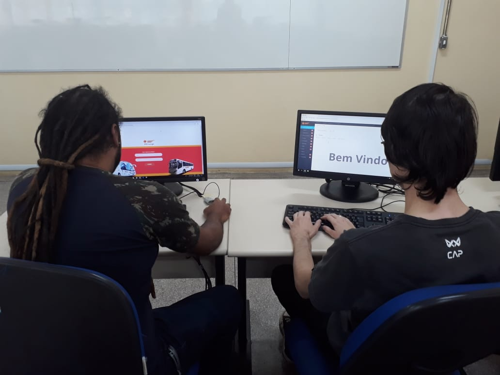

Gestores: ex-alunos da Fatec de Itapira Tiago Martins de Lima e André Luís Alves Pedroso atuam no setor de desenvolvimento de softwares personalizados
Publicado: 26/08/2019
Atualizado: 26/08/2019
A Fatec (Faculdade de Tecnologia) de Itapira “Ogari de Castro Pacheco” comemora a cada novo semestre o progresso profissional de seus alunos e ex-alunos. Graduados no curso de Gestão da Tecnologia da Informação, Tiago Martins de Lima, 32, e André Luís Alves Pedroso, 24, resolveram unir o conhecimento adquirido enquanto estudantes na produção de softwares altamente personalizados para várias empresas e comércios da região.
Colegas de turma, Lima e Pedroso após suas respectivas formaturas criaram a empresa Dev Bird, que já possui em sua lista de clientes o estúdio de tatuagem Purga Tattoo, Karen Lanches, Recanto da Tilápia e a Viação Mirage. “Atualmente estamos desenvolvendo um ERP (Sistema de Gestão Empresarial) que irá integrar os serviços de todos os setores da empresa contratante em uma só plataforma. No mercado há vários softwares disponíveis para comprar, mas pouquíssimos deles oferecem módulos tão personalizados como os nossos”, disse Lima.
A pequena oferta de mão obra especializada na região impulsionou os dois tecnólogos a investir em uma área que só tende a crescer. “As empresas muitas vezes compram um software para fazer o gerenciamento do seu negócio e acabam não usando muitas ferramentas da plataforma. Há casos de ferramentas que não contemplam o sistema, mas que são de grande importância para o funcionamento daquele serviço em questão. Por meio de uma consultoria personalizada co0nseguimos atender basicamente todas as necessidades do cliente, pois é ele quem nos ajuda no desenvolvimento, opinando sobre o que deseja, o que funciona e o que não é tão interessante”, explicou Pedroso.
E antes mesmo de iniciarem a sociedade Lima e Pedroso já eram destaque com um artigo científico publicado na revista eletrônica ‘JC na Escola, Ciência, Tecnologia e Sociedade: Ciência Alimentando o Brasil’, no início de 2018. Atentos as demandas do mercado os tecnólogos apresentaram um estudo sobre o desenvolvimento de um ‘Sistema de Cardápio Digital para Bares, Restaurantes e Similares’. A pesquisa está disponível no site “A revista faz parte de um projeto da agencia Inova do Centro Paula Souza que tem como finalidade de incentivar a cultura de inovação e empreendedorismo dos alunos de várias Fatecs do Estado. Nosso trabalho de pesquisa tem como ideia central a unificação do serviço de atendimento ao cliente de estabelecimentos gastronômicos”, comentou.
Dessa forma a atuação do garçom será menor dependendo do atendimento selecionado pelo cliente. “A figura do garçom continua a existir só que o cliente poderá realizar sozinho o seu pedido utilizando em seu celular um aplicativo personalizado para o estabelecimento. É algo parecido com os app de delivery, mais esse só funcionário dentro do estabelecimento. O cliente pode precisar fazer um check-in ao chegar para que o estabelecimento saiba a mesa em que ele está acomodado e fazer o seu pedido sozinho sem ajuda. No entanto voltamos a frisar o garçom ainda será necessário para levar o pedido e atender de forma convencional os clientes que desejarem”, frisou Lima.
O software deverá ainda possuiu uma ferramenta para solicitação do fechamento da conta e pagamento automático do pedido. “Pensamos em algo que acelerasse o atendimento e que trouxe benefícios tanto para os clientes como para os empresários”, comentou Pedroso.
O projeto por enquanto está apenas registrado em papel e a dupla aguarda o interesse de algum estabelecimento para desenvolver o sistema atendendo as especificações de cada ramo de atuação. Contentes com o crescimento profissional em tão pouco tempo Lima e Pedro destacaram a qualidade do ensino recebido enquanto estudantes da Fatec de Itapira. “Todo o conhecimento da gestão de um negócio tivemos em sala de aula com excelentes professores. Sem isso não saberíamos nem mesmo precificar os nossos serviços”, salientou Lima.
Pedro destacou ainda que as experiências vividas durante os três anos de cursos na Fatec de Itapira propiciaram um crescimento intelectual e profissional. “Posso dizer sem dúvida que enquanto aluno mergulhei em uma experiência de autoconhecimento que me fez enxergar o meu potencial profissional e que despertou o interesse em tornar-se um empreendedor de sucesso”, finalizou Pedroso.
Interessados no trabalho de assessoria tecnologia da DevBird podem entrar em pelo e-mail contato@devbird.com.br ou telefone (19) 98411-0987.